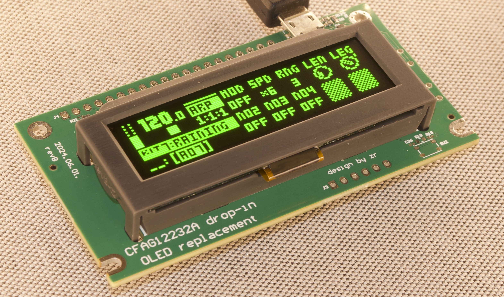
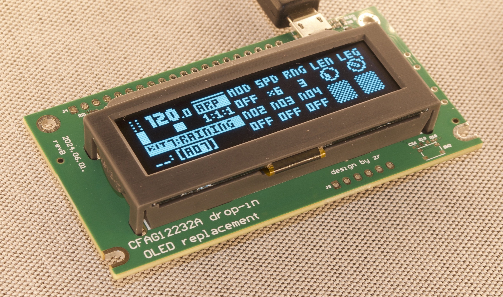

odm-ea1 OLED display module
A drop-in OLED replacement for the original LCD (CFAG12232A) of the Elektron Analog Mk1 devices: Analog Four, Analog Heat, Analog Keys and Analog Rytm (Mk1).




Installation and help
- Installation guide: step by step with photos, and a video
- DIP switches and troubleshooting
The old LCD has to be desoldered and the module soldered in (22 pins). If you have not done that before, read the guide first.
Specifications
| Panel | 2.23" 128×32 OLED; white, yellow, green or blue |
| Compatible | Analog Four, Heat, Keys, Rytm (Mk1) |
| Includes | Assembled PCB (revD), OLED panel, 3D printed bracket, pin headers |
| Brightness | Trim pot on the board, or fixed levels by DIP switch |
| Firmware | Updates by mail: write to e-mail |
Discussion and owners' experiences: the Elektronauts thread.